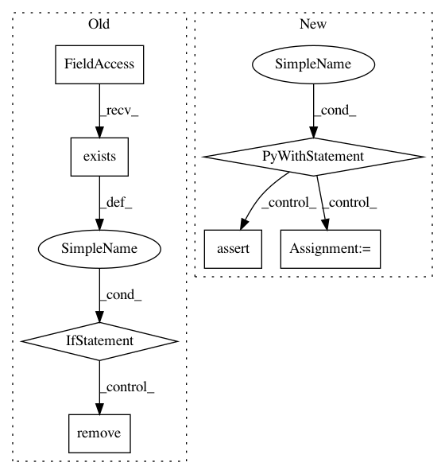

cd50ec1c075fed30b19771879b818ba14ecfb816,test/test_saving.py,TestSaving,test_modules,#TestSaving#,33
Before Change
self.start_tests(name="modules")
// Remove directory if exists
if os.path.exists(path=self.__class__.directory):
for filename in os.listdir(path=self.__class__.directory):
os.remove(path=os.path.join(self.__class__.directory, filename))
os.rmdir(path=self.__class__.directory)
agent, environment = self.prepare(config=dict(eager_mode=False))
states = environment.reset()
actions = agent.act(states=states)
states, terminal, reward = environment.execute(actions=actions)
After Change
def test_modules(self):
self.start_tests(name="modules")
with TemporaryDirectory() as directory:
agent, environment = self.prepare(config=dict(eager_mode=False))
states = environment.reset()
actions = agent.act(states=states)
states, terminal, reward = environment.execute(actions=actions)
agent.observe(terminal=terminal, reward=reward)
weights0 = agent.model.policy.network.layers[1].weights.numpy()
// TODO: implement proper Agent name-module iteration
for module in agent.model.this_submodules:
// (Model excluded, other submodules recursively included)
path = module.save(directory=directory)
assert path == os.path.join(directory, module.name)
agent.close()
environment.close()
agent, environment = self.prepare(config=dict(eager_mode=False))
states = environment.reset()
actions = agent.act(states=states)
states, terminal, reward = environment.execute(actions=actions)
agent.observe(terminal=terminal, reward=reward)
for module in agent.model.this_submodules:
module.restore(directory=directory)
x = agent.model.policy.network.layers[1].weights.numpy()
self.assertTrue((x == weights0).all())
actions = agent.act(states=states)
states, terminal, reward = environment.execute(actions=actions)
agent.observe(terminal=terminal, reward=reward)
files = set(os.listdir(path=directory))
self.assertTrue(len(files), 2 * len(agent.model.this_submodules))
for module in agent.model.this_submodules:
self.assertTrue(module.name + ".index" in files)
self.assertTrue(module.name + ".data-00000-of-00001" in files)
agent.close()
environment.close()
self.finished_test()
In pattern: SUPERPATTERN
Frequency: 4
Non-data size: 7
Instances
Project Name: reinforceio/tensorforce
Commit Name: cd50ec1c075fed30b19771879b818ba14ecfb816
Time: 2020-07-05
Author: alexkuhnle@t-online.de
File Name: test/test_saving.py
Class Name: TestSaving
Method Name: test_modules
Project Name: reinforceio/tensorforce
Commit Name: cd50ec1c075fed30b19771879b818ba14ecfb816
Time: 2020-07-05
Author: alexkuhnle@t-online.de
File Name: test/test_features.py
Class Name: TestFeatures
Method Name: test_pretrain
Project Name: facebookresearch/ParlAI
Commit Name: d082514cff28f46eae936872ee6c311db5843a37
Time: 2018-06-13
Author: jju@fb.com
File Name: parlai/mturk/core/mturk_manager.py
Class Name: MTurkManager
Method Name: _log_working_time
Project Name: facebookresearch/ParlAI
Commit Name: d082514cff28f46eae936872ee6c311db5843a37
Time: 2018-06-13
Author: jju@fb.com
File Name: parlai/mturk/core/mturk_manager.py
Class Name: MTurkManager
Method Name: _reset_time_logs